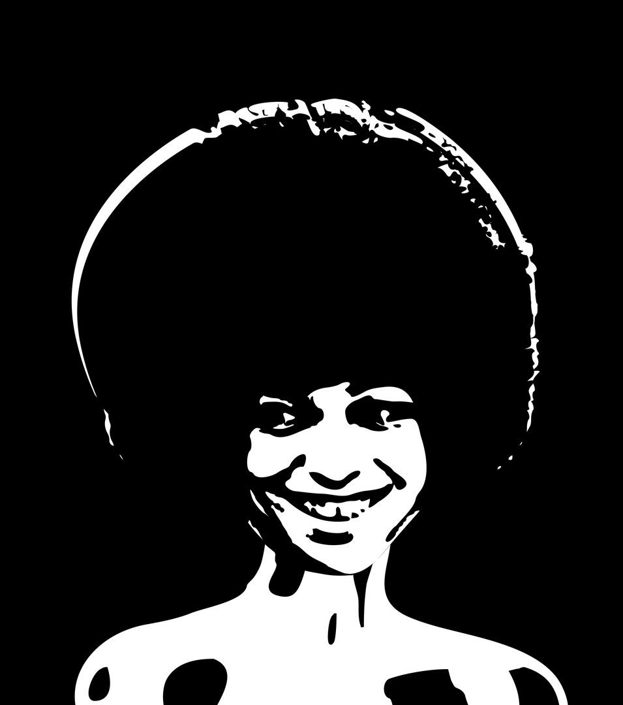
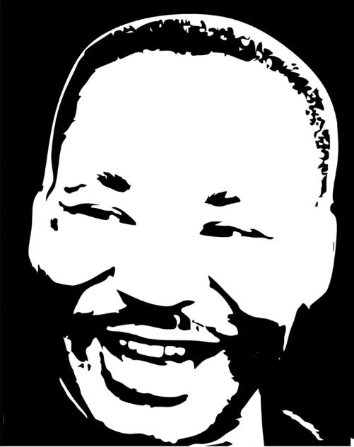
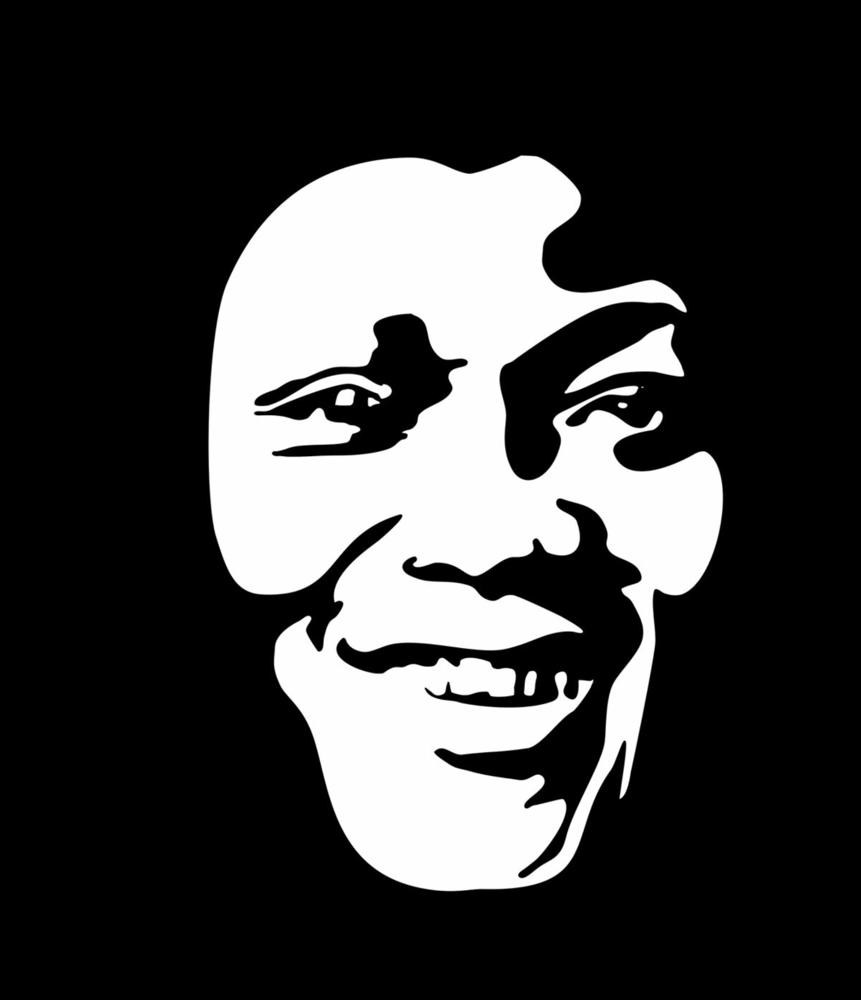

La Joie
Un visage ouvert, direct, presque respiratoire. Une œuvre pensée pour garder le mouvement intérieur.
Ouvrir l’imageUne série de portraits en noir et blanc pensée pendant les périodes difficiles, pour garder l’énergie positive, rester debout et dépasser les problèmes sans perdre la lumière intérieure.
Ces portraits ont été réalisés comme une réponse intérieure aux moments difficiles. Ils ne cherchent pas à nier l’épreuve, mais à garder une respiration, une présence, une force simple et lumineuse.
Garder l’énergie positive. Continuer. Overcome all the problems.
Le noir et blanc enlève le superflu et laisse seulement l’essentiel : un regard, une bouche, un souffle, un sourire. La joie devient alors une décision visuelle et intérieure.
La série rassemble Martin Luther King, Angela Davis, Bob Marley, Jack Johnson, Manu Dibango, ainsi que des portraits anonymes. Toutes ces présences racontent la même chose : une joie qui tient, qui résiste, qui avance.
Une série de visages pour garder l’élan, la dignité et la lumière. Cliquez sur une image pour l’ouvrir dans un autre onglet.
Un visage ouvert, direct, presque respiratoire. Une œuvre pensée pour garder le mouvement intérieur.
Ouvrir l’imageUne autre vibration de la même promesse : garder un espace de lumière malgré tout.
Ouvrir l’image
Une présence debout, dense, intérieure. Le portrait garde la force et la clarté.
Ouvrir l’image
Un sourire qui ouvre un horizon. Une joie qui porte plus loin que le cadre.
Ouvrir l’imageLe sourire devient rythme. Le portrait tient une énergie libre et immédiate.
Ouvrir l’image
Une image immédiate, forte, presque iconique. Le sourire devient puissance visuelle.
Ouvrir l’imageUne présence généreuse, lumineuse, traversée par la musique et la liberté.
Ouvrir l’imageMême si ces portraits existent en noir et blanc, certains vivent aussi dans des déclinaisons colorées. La forme reste simple et forte, mais l’atmosphère devient plus chaude, décorative et intérieure.
La couleur ne remplace pas le noir et blanc. Elle propose une autre respiration. Le portrait devient plus enveloppant, plus calme, plus installé dans l’espace intérieur.
TWAGIRUMUKIZA développe un langage visuel réduit à l’essentiel, où le contraste devient présence et où le portrait devient énergie.
Cette série se tient à la frontière entre portrait, signe graphique et respiration intérieure. Elle cherche moins à décrire qu’à faire sentir une force immédiate.